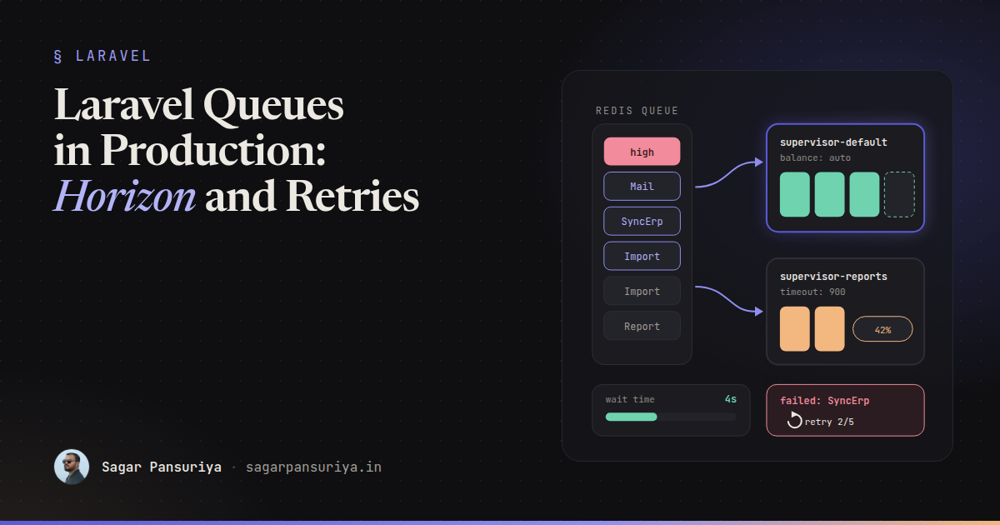
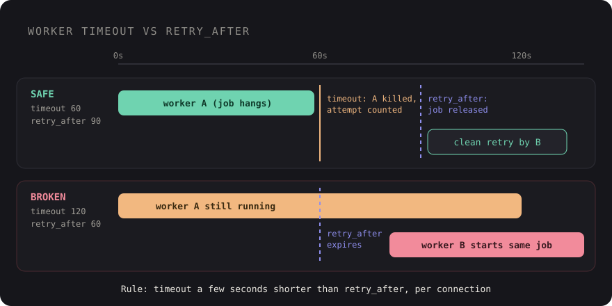

Laravel Queues in Production: Horizon, Retries and the Pitfalls Nobody Warns You About


You've probably seen this one. The app works perfectly on staging. Emails go out, PDFs get generated, the webhook sync runs. Then it hits production traffic and, a week later, someone notices that a customer got the same invoice email four times, a report job has been "processing" since Tuesday, and the failed_jobs table has 12,000 rows nobody has looked at.
Queues are one of those Laravel features that are easy to start and surprisingly easy to get wrong. dispatch() is one line. Running workers reliably, with sane retries, under deploys and memory pressure, is a different job.
This post is the checklist I wish I had the first time I put queues in front of real traffic: picking a driver, setting up Horizon properly, getting retries and timeouts right, writing jobs that are safe to run twice, and the production pitfalls that bite almost every team.
Choosing a driver
Laravel ships with several queue drivers. For production, the real choice is usually between three:
| Driver | Good for | Watch out for |
|---|---|---|
database | Small apps, low volume, no extra infrastructure | Polling load on your main database as volume grows |
redis | Most apps with real traffic, and the only driver Horizon supports | Redis memory limits and eviction policy (don't let it evict queue keys) |
sqs | AWS-hosted apps, serverless, very spiky load | A 15-minute maximum delay, and no Horizon dashboard |
My default: start on database if the app is small, and move to redis with Horizon as soon as queues become part of the product rather than a background convenience. The move is mostly a config change, which is the nice thing about Laravel's queue abstraction.
One Redis setting worth checking early: if the same Redis instance is also your cache, an eviction policy like allkeys-lru can quietly drop queued jobs when memory fills up. Use a separate Redis database or instance for queues, or a noeviction policy.
Horizon: supervisors, balancing and metrics
Horizon replaces a pile of hand-written queue:work processes with one command, php artisan horizon, and a config file that describes your workers as code. The key concept is the supervisor: a group of worker processes with shared settings, watching one or more queues.
// config/horizon.php
'environments' => [
'production' => [
'supervisor-default' => [
'connection' => 'redis',
'queue' => ['high', 'default', 'low'],
'balance' => 'auto',
'autoScalingStrategy' => 'time',
'minProcesses' => 2,
'maxProcesses' => 12,
'tries' => 3,
'timeout' => 60,
'memory' => 128,
],
'supervisor-reports' => [
'connection' => 'redis',
'queue' => ['reports'],
'balance' => false,
'maxProcesses' => 2,
'tries' => 1,
'timeout' => 900,
],
],
],A few decisions are hiding in that config:
- Separate supervisors for different job shapes. A 15-minute report export and a 200 ms notification should not share workers or timeouts. If they do, one slow report can starve every quick job, and the timeout has to be set for the slowest job.
- Queue order is priority. With
['high', 'default', 'low'], workers drainhighfirst. Use that for password resets and checkout emails, not for everything. - Balancing.
automoves worker processes between queues based on workload, betweenminProcessesandmaxProcesses.simplesplits processes evenly.falseprocesses the queues in the order listed with a fixed pool.
For the dashboard's throughput and runtime graphs, schedule the snapshot command. Without it, the metrics tab stays empty:
// routes/console.php
Schedule::command('horizon:snapshot')->everyFiveMinutes();And lock down the dashboard in HorizonServiceProvider using the viewHorizon gate. In non-local environments it's closed by default, which is correct, but make sure the gate lets in the people who are actually on call.
Horizon can also notify you when a queue's wait time crosses a threshold. The waits option in config/horizon.php sets the threshold in seconds per connection and queue, and Horizon::routeMailNotificationsTo() or routeSlackNotificationsTo() tell it where to send the alert. Wait time is the metric that matters most to users: a growing wait means jobs are arriving faster than you can process them.
Retries, backoff, tries and timeouts
Every job needs an answer to three questions: how long may it run, how many times may it be attempted, and how long to wait between attempts. Put the answers on the job class, where the next developer will see them:
class SyncOrderToErp implements ShouldQueue
{
use Queueable;
public int $tries = 5;
public int $timeout = 30;
public int $maxExceptions = 3;
public function __construct(public Order $order) {}
public function backoff(): array
{
return [10, 60, 300, 900]; // seconds between attempts
}
public function handle(ErpClient $erp): void
{
$erp->upsertOrder($this->order);
}
public function failed(Throwable $e): void
{
// tell a human: the order is not in the ERP
}
}$tries counts attempts, including ones released back by middleware like rate limiting. $maxExceptions caps how many of those attempts may end in an unhandled exception. That distinction matters for jobs that are frequently released: you might allow 20 attempts for a rate-limited API, but only 3 real failures. For "keep trying for a while", a retryUntil() method returning a DateTime is often clearer than a fixed count.
Use exponential-ish backoff for anything that talks to an external service. Retrying a struggling API every 3 seconds just adds to its problem.
The timeout vs retry_after trap
This is the single most common production queue bug I see. There are two different numbers:
- The worker timeout (
timeoutin Horizon,--timeoutonqueue:work, or$timeouton the job): how long a worker lets a job run before killing it. retry_afterinconfig/queue.php: how long the queue waits before assuming a reserved job was lost and handing it to another worker.

If retry_after is shorter than your longest job, the queue gives the job to a second worker while the first is still running it. That's how a customer gets four invoice emails. The Laravel docs are explicit about the rule: the timeout should always be at least several seconds shorter than retry_after. For a supervisor with a 900-second timeout, the connection it uses needs a retry_after above 900, which is another reason to give long jobs their own Redis connection.
Write jobs that are safe to run twice
Even with perfect timeouts, a job can run more than once: a worker dies after the side effect but before acknowledging the job, a deploy kills a process mid-run, or someone clicks Retry in Horizon. Design for it.
- Check before acting. "Send the invoice email" becomes "send the invoice email if
invoice_sent_atis null, then set it." - Use upserts and natural keys instead of blind inserts.
- Pass idempotency keys to external APIs that support them, so a repeated charge or create call is ignored upstream.
- Pass IDs or models, not big payloads. Laravel serializes Eloquent models by ID and re-fetches them, so the job always works on fresh data.
- Dispatch after commit. A job dispatched inside a transaction can run before the transaction commits and find no row. Call
->afterCommit()on the dispatch, or setafter_committotrueon the queue connection.
For "only one of these at a time", Laravel has two tools that are easy to confuse:
// Only one copy of this job may be on the queue for a given user
class RebuildUserSearchIndex implements ShouldQueue, ShouldBeUnique
{
use Queueable;
public int $uniqueFor = 600;
public function __construct(public User $user) {}
public function uniqueId(): string
{
return (string) $this->user->id;
}
}
// Many may be queued, but only one runs at a time per account
public function middleware(): array
{
return [(new WithoutOverlapping($this->account->id))->expireAfter(180)];
}ShouldBeUnique prevents duplicates from being dispatched. WithoutOverlapping lets them queue but serializes execution. Both rely on atomic locks, so your cache driver must support them (Redis, database, and memcached all do).
Batches and chains
Chains run jobs in order and stop at the first failure. Batches run jobs in parallel and let you react when the whole group finishes:
Bus::chain([
new GenerateInvoicePdf($order),
new EmailInvoice($order),
])->dispatch();
$batch = Bus::batch(
$rows->chunk(500)->map(fn ($chunk) => new ImportRows($import, $chunk))
)
->then(fn (Batch $batch) => $import->markComplete())
->catch(fn (Batch $batch, Throwable $e) => $import->markFailed($e))
->name("Import #{$import->id}")
->dispatch();Batched jobs need the Batchable trait and the job_batches table. Inside handle(), check $this->batch()->cancelled() and return early, so cancelling a big import actually stops it. Store the batch ID on your own model and you get a progress bar almost for free: Bus::findBatch($id)->progress(). I used the same pattern for document ingestion in the RAG docs assistant post.
Failed jobs are a to-do list, not a log
A failed_jobs table nobody reads is worse than no table, because it gives a false sense of safety. Three habits keep it useful:
- Alert on failures. Listen for failures in a service provider and send them where your team already looks:
Queue::failing(function (JobFailed $event) { Log::channel('slack')->error('Job failed', [ 'job' => $event->job->resolveName(), 'error' => $event->exception->getMessage(), ]); }); - Triage weekly. For each failure class: fix the bug, then
php artisan queue:retrythe affected IDs, or decide it's expected and handle it in the job. - Prune. Schedule
queue:prune-failedso the table doesn't grow forever.
Production pitfalls
Deploys and stale code
Queue workers are long-running processes. They boot your app once and keep that code in memory. After a deploy, they're still running the old code until restarted. Add php artisan horizon:terminate (or queue:restart without Horizon) to every deploy, after the new code is in place. Horizon finishes its current jobs and exits, and your process monitor starts it again.
That means you need a process monitor. Supervisor is the classic choice. Set its stopwaitsecs higher than your longest job's timeout, or it will kill workers mid-job during a deploy.
Memory leaks
Because the app stays booted, anything that accumulates (static arrays, a query log left enabled, a growing in-memory cache) grows forever. Horizon's memory option and queue:work --memory restart a worker once it crosses a limit. Without Horizon, --max-jobs and --max-time recycle workers regularly, which is cheap insurance.
Singletons that remember the last job
A service that stores "the current tenant" or "the current user" in a singleton will leak state from one job to the next. Reset it at the start of each job, or scope it to the job instead of the container.
Everything on one queue
If a bulk import dumps 50,000 jobs on default, password reset emails wait behind them. Give bulk work its own queue.
A checklist to keep
- Redis with Horizon once queues matter, on a Redis instance that won't evict queue keys.
- Separate supervisors and queues for long, bulk and urgent jobs.
- Worker timeout several seconds shorter than
retry_after, per connection. $tries,$timeout,backoff()andfailed()on every job that touches the outside world.- Jobs are idempotent, dispatched after commit, and carry IDs rather than payloads.
horizon:snapshotscheduled, wait-time notifications configured, failures alerted.horizon:terminatein every deploy, and a process monitor with a long enough stop timeout.
None of this is exotic. It's mostly a handful of numbers that need to agree with each other, and a few habits around jobs that might run twice. Get those right and the queue becomes the boring part of your stack, which is exactly what it should be.
Discussion